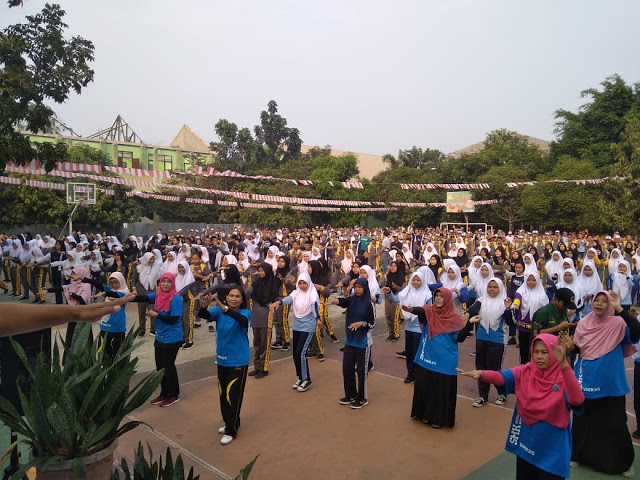

Senam Rutin di Sekolah

Dalam meningkatkan kualitas pembelajaran di sekolah banyak komponen yang mendukung, salah satunya adalah kesehatan warga sekolah (peserta sidik, kepala sekolah, guru, dan karyawan).
untuk mendukung proses pembelajaran yang sehat dan memberikan penyegaran dan rasa segar pada seluruh komponen serta Untuk mengembangkan bakat dan melatih siswa dalam berolahraga, Warga Sekolah melakukan senam rutin seminggu sekali.
Dalam pelaksanaan program ini di pandu oleh guru penjas atau guru olahraga yang ada di Sekolah. selaku guru olahraga dengan semangat memberikan dan membimbing peserta didik untuk melakukan senam pagi, hal ini selain membiasakan berolahraga juga mendidik peserta lebih disiplin dalam pembelajaran.